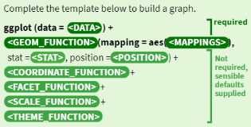
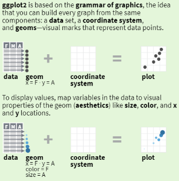
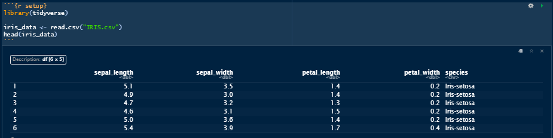
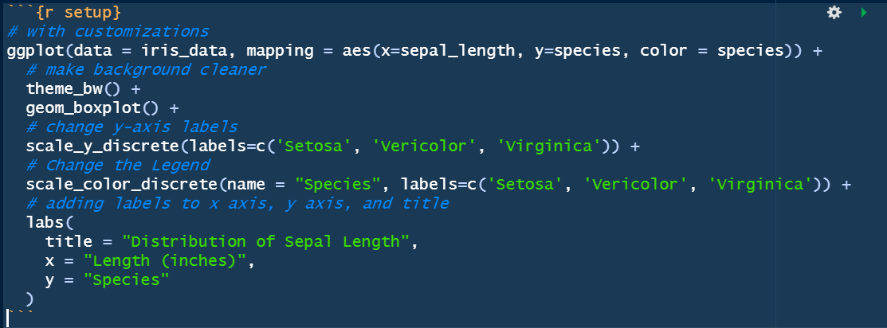
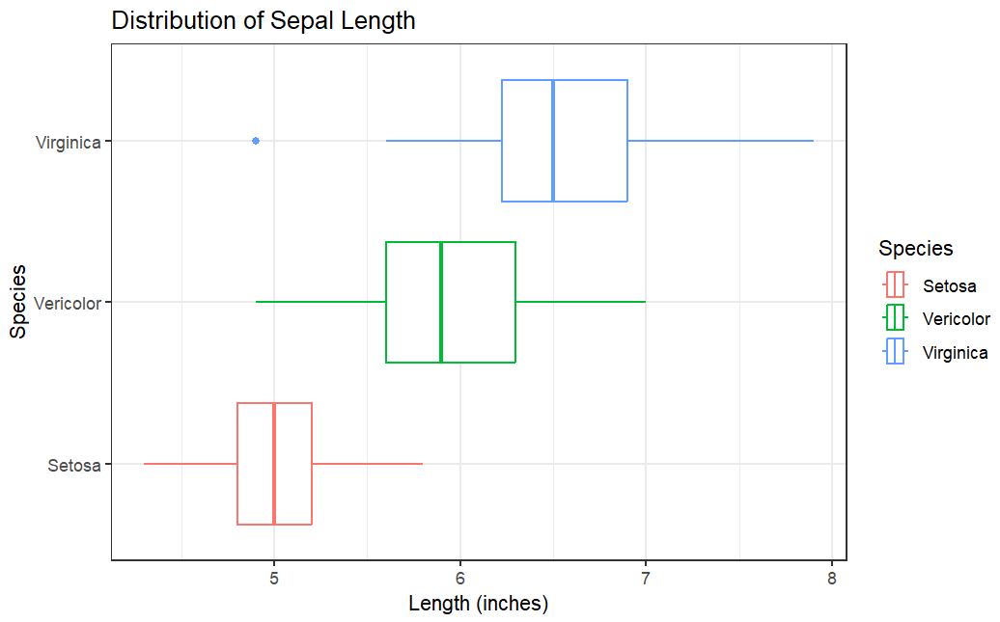

Visualizations
For this module, I WILL NOT be explaining what each visualization represents, rather show multiple examples of the visualizations with customization. If you need an explamation for what each visualization represents, reference the python visualization module found here: or find the answers on Google. For the majority of the visualizations, I will be using the folliwng data set and for each of the following visualizations, all of the code and datasets can be found here:
GGPLOT
There are a couple different ways to graph data in R, but I will be going over how to use ggplot since I believe it to be the easiest and most intuitive out of the graphing functions in R. Here is a quick rundown on how it works and some important information before going into the visualizations. (Some of this may make more sense after seeing some examples in the visualizations)
 Data Set
This will be the data I will be using unless otherwise specified:
Scatterplots
Histogram
Dot Plot
Bar Plot
Box Plot
Customized
 Other Customizations
Here are some other cool/unique customizations that R allows for visualization. In addition, if you want to see how to implement images into graphs & see some other cool visualizations, look at this article and the code that goes along with it
Another example can be found here: along with the code . Many of the functions and information can also be found here: